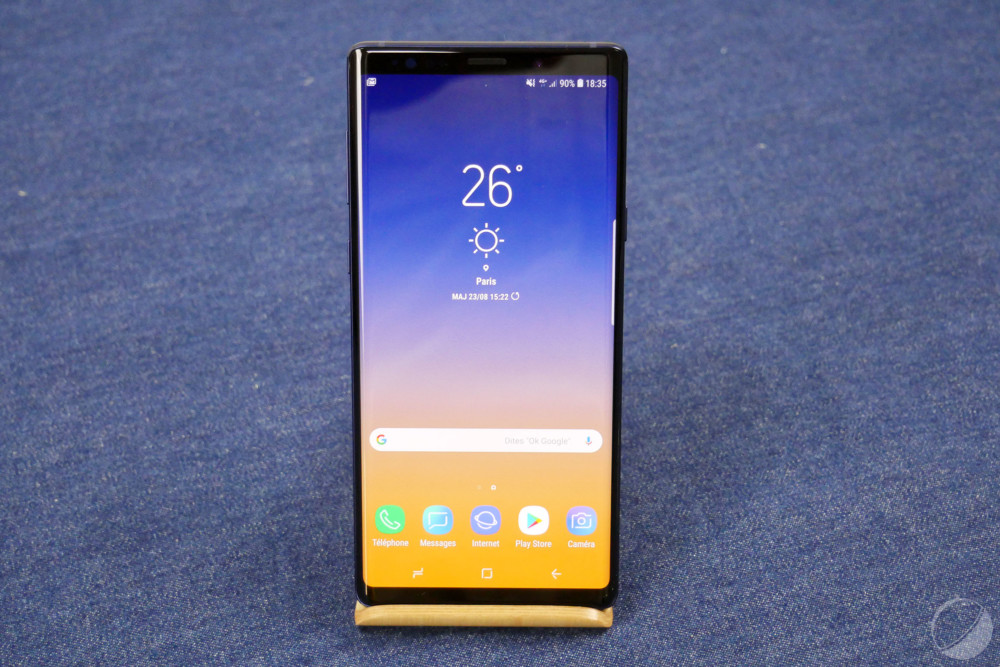
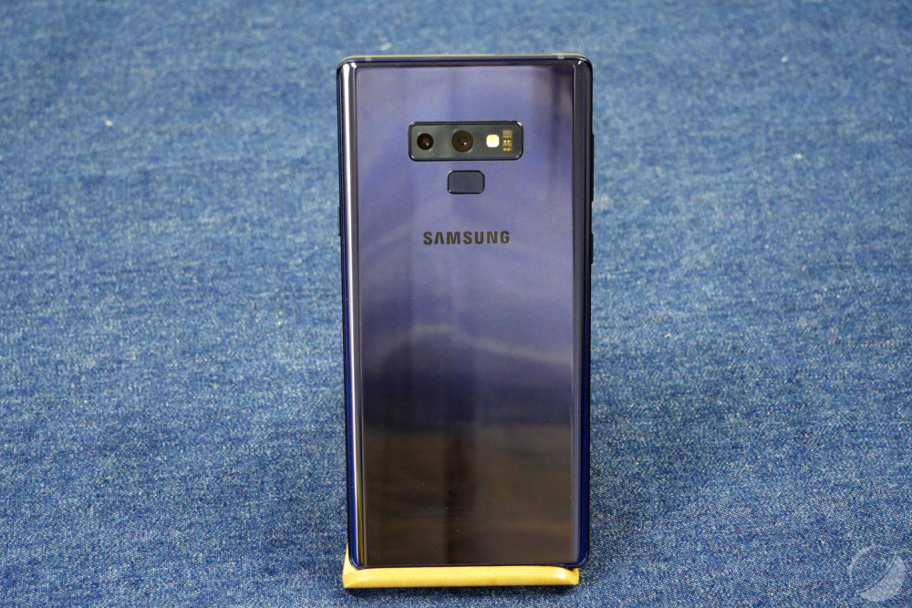
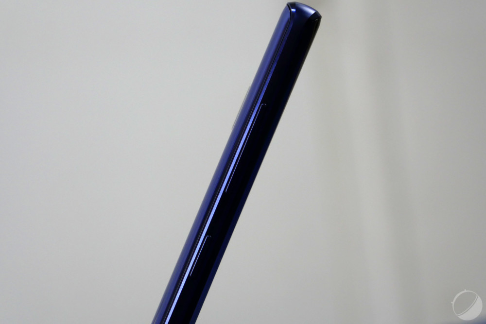
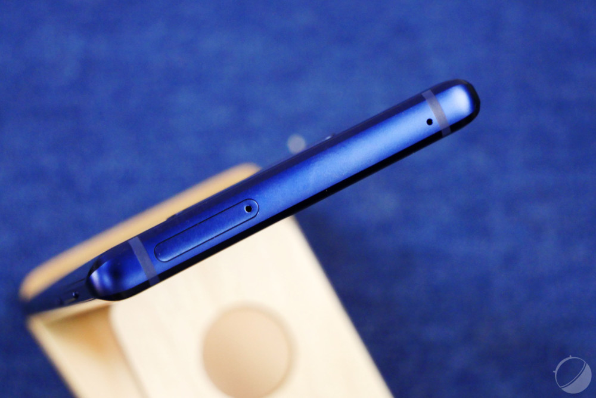
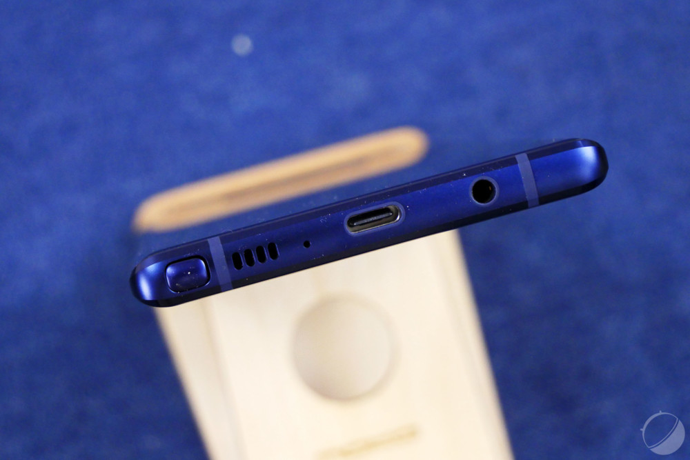
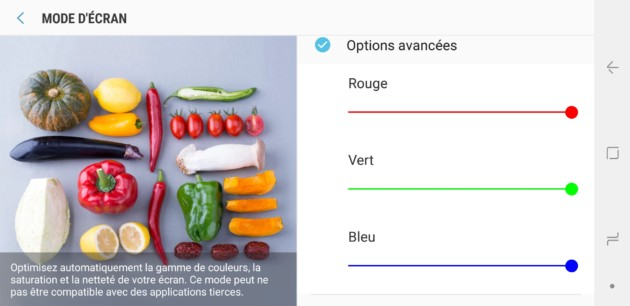
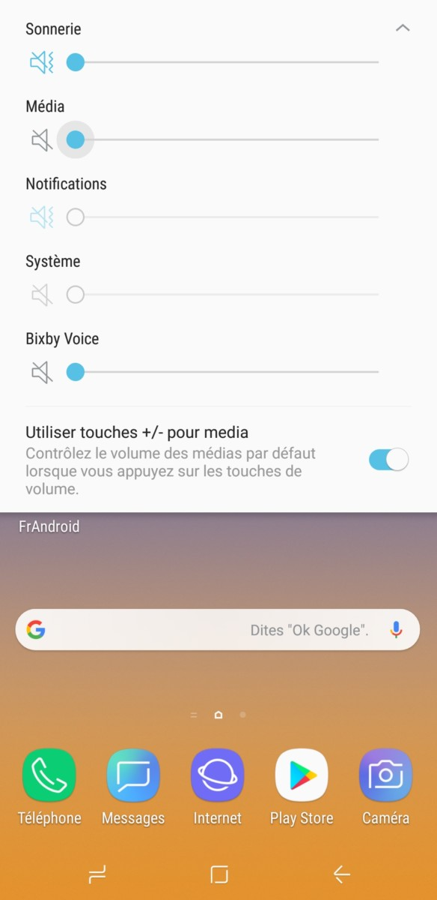
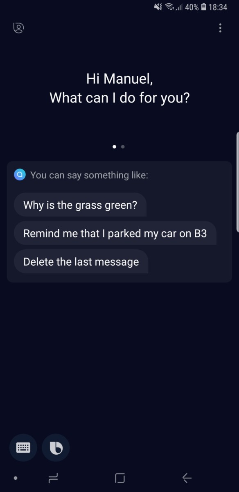
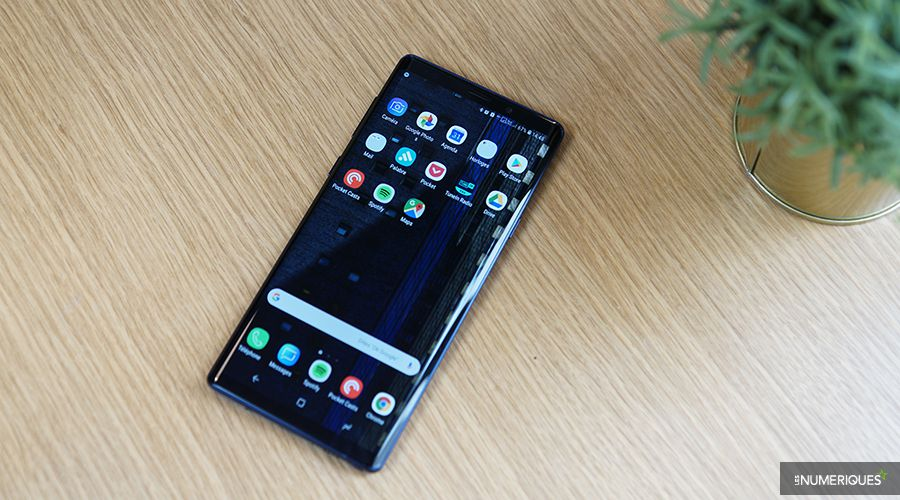

TEST DU GALAXY NOTE 9
Note
9/10
Où acheter le TEST DU GALAXY NOTE 9 au meilleur prix ?
Introduction
La gamme Galaxy Note a connu des hauts et des bas et peine aujourd’hui à justifier son rang de phablette en dehors de la présence de son stylet. Retour sur le Galaxy Note 9, petit dernier de la série, et sur son intérêt sur un marché où les grandes diagonales d’écran sont devenues la norme.
Le tout premier Galaxy Note a ouvert la voie à l’élargissement des écrans. Son format alors si particulier était décrié par certains, mais a réussi à séduire un certain public, assez pour perdurer plusieurs années plus tard. En 2018, les grands écrans sont devenus la norme, plus encore depuis la popularisation du borderless et du ratio 18:9, et on peut se demander si le S Pen suffit à justifier l’existence de cette gamme dans le catalogue de Samsung aux côtés des Galaxy S Plus.
Fiche technique
| Modèle | SAMSUNG GALAXY NOTE 9 |
|---|---|
| Version de l'OS | Android 8.1 |
| Interface | Samsung Experience |
| Taille d'écran | 6,4 pouces |
| Définition | 2960 x 1440 pixels |
| Densité de pixels | 514 ppp |
| SoC | Exynos 9810 à 2,7GHz |
| Processeur (CPU) | ARMv8 |
| Puce Graphique (GPU) | Mali-G72 MP12 |
| Mémoire vive (RAM) | 6 Go |
| Mémoire interne (flash) | 128 Go, 256 Go |
| MicroSD | Oui |
| Appareil photo (dorsal) | 12 Mégapixels |
| Appareil photo (frontal) | 8 Mégapixels |
| Enregistrement vidéo | 4K |
| Wi-Fi | Oui |
| Bluetooth | 5.0 + A2DP + LE |
| Réseaux | LTE, HSPA, GSM |
| Bandes supportées | 2100 MHz (B1), 800 MHz (B20), 1800 MHz (B3), 2600 MHz (B7), 700 MHz (B28) |
| SIM | 2x nano SIM |
| NFC | Oui |
| Ports (entrées/sorties) | USB Type-C |
| Géolocalisation | Oui |
| Batterie | 4000 mAh |
| Dimensions | 161,9 x 76,4 x 8,8 mm |
| Poids | 200 grammes |
| Couleurs | Rose, Bleu, Noir |
| Prix | 757€ |
DESIGN
En début d’année 2018, Samsung a joué l’itération en proposant un Galaxy S9 proche de la copie carbone du Galaxy S8, ne corrigeant que quelques problèmes çà et là. Avec le Galaxy Note 9, Samsung continue sur la même lancée et reprend dans les grandes lignes le design de son prédécesseur, le Galaxy Note 8.
Les deux téléphones ont des dimensions et des poids très proches. Le modèle de cette année mesure 161,9 x 76,4 x 8,8 mm pour 197 grammes contre 162,5 x 74,8 x 8,6 mm pour 195 grammes pour son ancêtre. Il s’avère donc légèrement plus large et plus épais, mais aussi plus lourd alors que le modèle de l’année dernière était déjà très dense. Notons pour la petite anecdote que 197 grammes est le poids sans le stylet. Avec, le Galaxy Note 9 dépasse très légèrement la barre des 200 grammes. Mais pour une fiche technique, c’est toujours mieux de rester en dessous.
Difficile de reconnaître le Galaxy Note 9 du Galaxy Note 8
Le Galaxy Note 9 conserve également les lignes très agressives du Note 8 et son côté très carré. Les arrêtes sont cependant un peu plus plus biseautées, ce qui le rend plus agréable en main. À l’œil nu, il est cependant difficile de distinguer un téléphone de l’autre tant les deux itérations sont proches.
Outre des bordures d’écran légèrement (très légèrement) plus fines, le Galaxy Note 9 se démarque donc par son dos. Si le revêtement est toujours en verre — plutôt salissant –, le capteur d’empreintes s’est un peu décalé pour se centrer sous l’appareil photo et prendre ainsi une position bien plus naturelle pour le doigt. C’est clairement le principal problème du Note 8 qui est réglé ici. Notons qu’il reste encore un peu haut si vous avez de petits doigts.

Le deuxième problème d’ergonomie en revanche est toujours bel et bien là. Je veux bien évidemment parler du bouton Bixby, positionné sur la tranche droite, juste sous les boutons de volume. Inutile en France, il rehausse qui plus est des touches essentielles : il devient difficile d’augmenter le volume sur un téléphone déjà assez grand de base.
Pour le reste du tour du propriétaire, notons la certification IP68, la présence du stylet S Pen, un haut-parleur stéréo, un port jack, un port USB-C 3.1 et un tiroir unique dans lequel on peut insérer deux cartes SIM ou une carte SIM et une micro SD.



ÉCRAN
L’écran du Galaxy Note 8 était déjà excellent, et c’est sans surprise que Samsung se positionne à nouveau très bien pour son Galaxy Note 9. La dalle profite des bordures plus fines pour gagner 0,1″ de diagonale (pour un total de 6,4″ désormais), tout en conservant sa définition QHD+ (Full HD par défaut). Cela représente donc une résolution de 514 PPP.
La dalle est protégée par un revêtement Gorilla Glass 5 et peut se targuer de ne pas être réduit par une encoche. Par ailleurs, les bords sont incurvés, comme c’est désormais de coutume sur les flagships de la marque équipés de l’écran « Infinity Display ».
Écran AMOLED oblige, le contraste est infini et Samsung en profite pour élever encore un peu plus la luminosité de son écran. Notre sonde a relevé un pic à 500 cd/m², mais, comme sur les autres écrans Samsung, elle ne prend pas en compte la gestion de la luminosité automatique qui permet selon DisplayMate de faire monter cette valeur à plus de 1050 cd/m².
Clairement, à l’œil nu, l’écran est sublime. La luminosité permet d’en profiter même en plein soleil, les angles de vision sont extraordinaires, et la colorimétrie est finement réglée dans les modes « photo » et « cinéma », effleurant les 6500 K nécessaires à l’obtention d’un point blanc idéal. Par ailleurs, non seulement le spectre sRGB est entièrement couvert, mais le spectre DCI-P3 aussi.
Par ailleurs, ceux qui le souhaitent peuvent régler à leur goût la température des couleurs à l’aide de trois réglettes (rouge, vert et bleu), dans les paramètres du téléphone.

Ajoutez à cela une compatibilité HDR et vous avez certainement dans les mains l’un des plus beaux écrans du moment, si ce n’est le plus beau.
LOGICIEL
Le Galaxy Note 9 embarque Samsung Experience 9.5, l’interface logicielle de Samsung reposant sur Android 8.1 Oreo, ainsi que le patch de sécurité du 1er août 2018. Difficile d’être plus à jour donc !
L’interface de Samsung a ses détracteurs, et cela peut se comprendre. Moi-même, je la trouve très frustrante au quotidien avec ses multiples fenêtres pop-ups qui viennent constamment gêner l’utilisation. Et en même temps, elle permet de prendre par la main les consommateurs les plus novices. Si vous recherchez une interface pour des grands-parents peu habitués aux nouvelles technologies, les nombreuses fenêtres d’aide pourront leur convenir. Pour tous les autres, c’est bien souvent un clic de plus (voire plusieurs) à chaque action.
Bien sûr, sur le long terme, cela ne se ressent plus, une fois que l’on a été confronté une fois à chaque pop-up, elle ne réapparaît plus, mais même après une semaine complète d’utilisation au quotidien, il n’est pas rare de retomber sur l’une d’elles tant il y en a. Autre chose sur laquelle on tombe régulièrement : Bixby. Le bouton dédié à l’assistant est mal placé et ne peut plus être désactivé nativement. Lancer ce service mort au lieu de baisser le volume est plus que frustrant. Notons tout de même que Samsung permet de gérer le volume multimédia par défaut au besoin.
 Mais comme je le disais déjà dans le test du Galaxy S9+, cette aide n’est pas toujours superflue tant Samsung Experience est une interface encombrée et alambiquée. À force de ranger les choses dans des sous-catégories, le géant coréen rend la recherche de certains éléments bien plus longue qu’à l’accoutumée. Cela peut néanmoins s’expliquer par le grand nombre d’options et de fonctionnalités ajoutées par le constructeur.
Mode utilisation à une main, capture intelligente, Game Launcher, options pour handicapés (notamment des commutateurs qui permettent par exemple d’ouvrir une application en clignant des yeux ou en ouvrant la bouche), changement de thèmes, gestion biométrique… Samsung semble avoir pensé à tout, et c’est cette surenchère de petits ajouts pourtant bien pensés lorsqu’ils sont pris indépendamment qui semble, osons le mot, bordélique.
PERFORMANCES
Pour ce qui est des performances, Samsung ne s’est pas trop mouillé et aligne son flagship de fin d’année sur celui annoncé en février. Vous l’aurez compris, le Galaxy Note 9 embarque le même couple Exynos 9810 / 6 Go de RAM que le Galaxy S9 et propose donc les mêmes performances. Le gain est certes intéressant par rapport à la génération précédente sortie en 2017, mais la puce de Samsung a été dépassée cette année par le Snapdragon de Qualcomm et des smartphones comme le Sony Xperia XZ2, le OnePlus 6 ou le Xiaomi Mi Mix 2s proposent désormais des expériences plus fluides
Au quotidien, la différence entre un S845 et un Exynos 9810 reste néanmoins assez ténue. L’interface reste fluide, même si Samsung a décidé d’ajouter de nombreuses animations un peu lourdes par défaut. Par exemple, le capteur d’empreintes est très rapide, mais le temps écoulé entre l’appui du doigt et l’arrivée sur le bureau est bien plus long que sur un autre smartphone de cette gamme. La partie hardware est à la hauteur, mais on sent que toutes les fioritures ajoutées par Samsung ralentissent l’expérience.
Dans les jeux, la différence est très peu visible également. Sur Arena of Valor par exemple, le Galaxy Note 9 oscille entre 59 et 60 FPS avec tous les taquets poussés à fond. Il en va de même sur des jeux plus gourmands comme PUBG Mobile, où l’on observe seulement les rares lags liés au manque d’optimisations du jeu. Précisons tout de même que le téléphone chauffe un peu plus que la plupart des terminaux dotés d’un Snapdragon 845.
APPAREIL PHOTO
pour la photo, le Galaxy Note 9 reprend le même module que le Galaxy S9+, ce qui fait qu’il n’y a aucune grosse surprise de ce côté. On est donc en présence d’un double capteur de 12 Mégapixels (avec des photosites respectifs de 1,4 et 1 µm) couplé à un objectif avec ouverture variable d’une part (f/1.5-2.4) et à ouverture fixe de l’autre (f/2.4). On a déjà soulevé le manque d’intérêt de cette nouvelle technologie, intéressante sur le papier, mais ne venant finalement pas chambouler les habitudes dans les faits.
Concrètement, qu’est-ce que cela donne ? En plein jour, de très belles photos. Les couleurs sont sublimées sans pour autant être trop clinquantes comme c’est le cas sur le P20 Pro, la luminosité est très bien gérée, même dans des conditions un peu difficiles, le contraste est très bon et le piqué est globalement satisfaisant. Sur de longues distances, on remarque que la netteté n’est pas optimale, mais ce léger flou artistique permet de cacher un possible bruit numérique.
CONCLUSION
Pas renversant au premier abord, ce Note 9 est finalement un téléphone majeur pour Samsung. À coup de nombreuses petites améliorations, le constructeur est enfin parvenu à réaliser un sans-faute. Le Note 9 est évidemment réservé aux amateurs de smartphone géant. Et parmi ceux-là, on a rarement, si ce n'est jamais, vu un smartphone aussi excellent en tout point.
